수익만 보세요
화자는 직접 운영하다 작년에 매각한 사업의 Google Ads 계정을 먼저 보여 줘요. 광고비로 약 17만 7천 캐나다 달러를 썼고, 전환율은 20% 안팎이었다고 해요. 화자는 이 정도면 마케터 상위 1%라고 말해요.
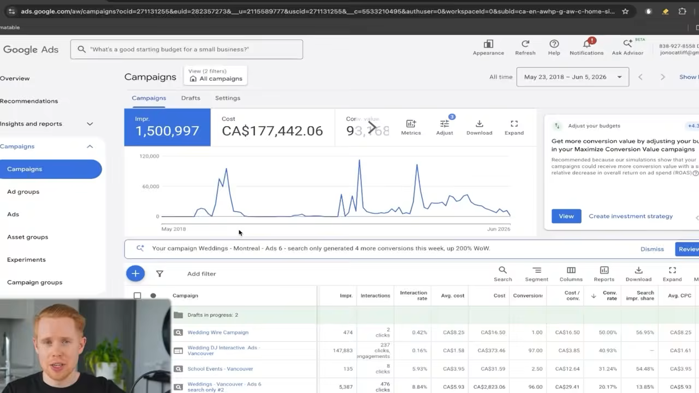
출발점은 절박했어요. 통장에 1만 달러만 남은 채 Google Ads를 시작했고, 월세를 내고 나니 2주치 생활비만 남았대요. 그 사이 고객 10명을 잡았고, 그게 7자리 매출 사업이 됐다고 해요.
Google이 시키는 대로 하지 마세요
화자는 먼저 의심할 것 세 가지를 꼽아요.
- 최적화 점수와 추천 항목. 광고주를 위한 게 아니라 광고비를 더 쓰게 하려는 장치라고 봐요.
- Google 담당자의 정기 전화. 담당자의 보너스는 광고주의 성과가 아니라 지출에 묶여 있다고 말해요.
- 화려한 지표. 클릭 수, 클릭률, 전환율보다 중요한 건 결국 얼마를 벌었느냐예요.
왜 수익만 봐야 할까요
매달 5만 8천 달러를 버는 사업도 고객이 Google Ads에서 왔는지, 검색엔진 노출이나 SNS, 외부 소개 사이트에서 왔는지 모를 수 있어요. 문의가 많아 보여도 스팸이나 가짜, 질 낮은 문의일 수 있죠. 그래서 결제한 고객이 어느 경로로 왔는지 추적해야 잘 되는 곳에 더 쓰고 안 되는 곳을 끊을 수 있어요. 영상의 나머지는 모두 이 목표, 즉 광고 수익률(ROAS)을 끝까지 보는 구조를 만드는 데 맞춰져 있어요.
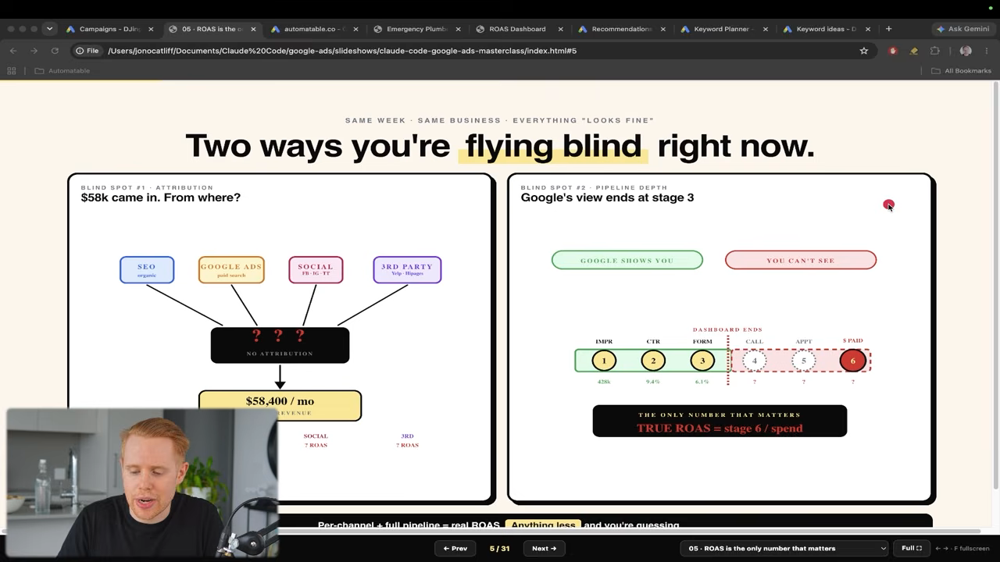
화자가 소개하는 전략은 네 가지예요. 단일 키워드 광고 그룹, 수익 기준 추적, 전환이 잘 되는 랜딩 페이지, 그리고 이전 방문자를 다시 잡는 리타기팅이에요.
돈이 되는 키워드 고르기
'plumbing'을 검색하는 사람이 다 배관 공사를 맡기려는 건 아니에요. 배관 자재를 사려는 사람, 견습생 자리를 찾는 사람, 강좌를 찾는 사람, 경쟁사 이름을 친 사람이 섞여 있어요. 이런 검색어에 광고가 뜨면 고객이 될 리 없는 클릭에 돈을 내요. 화자는 AI에게 좋은 키워드를 물어보면 엉터리 답이 나온다고 경고해요.
일치 유형: 과녁의 어디를 노릴까요
키워드를 등록할 때는 검색어와 얼마나 비슷해야 광고를 보여 줄지 정해요. 화자는 이를 과녁에 비유해요. 한가운데는 이상적이지만 양이 적고, 바깥으로 갈수록 양은 늘지만 엉뚱한 사람이 섞여요.
| 일치 유형 | 어떻게 걸리나요 | 화자 평가 |
|---|---|---|
| 확장 일치 | Google이 비슷하다고 판단한 검색어까지 넓게 잡아요. '응급 배관공 토론토'에 '배관공 연봉 토론토'나 'DIY 배수구 뚫기'가 붙을 수 있어요 | 피해요 |
| 구문 일치 | 검색어 안에 그 표현이 들어 있으면 걸려요. '토론토 시내 24시간 응급 배관공'도 잡혀요 | 최선이에요 |
| 일치 | 그 표현 그대로 검색할 때만 걸려요 | 정확하지만 모두가 그렇게 검색하진 않아요 |
화자가 구문 일치를 고르는 이유는 같은 뜻을 말하는 방식이 수천 가지라서예요. 그 변형을 다 잡되 엉뚱한 의미는 피할 수 있다는 거예요. 그리고 '키워드'는 단어 하나가 아니라 사람이 친 검색어 전체라는 점도 짚어요.
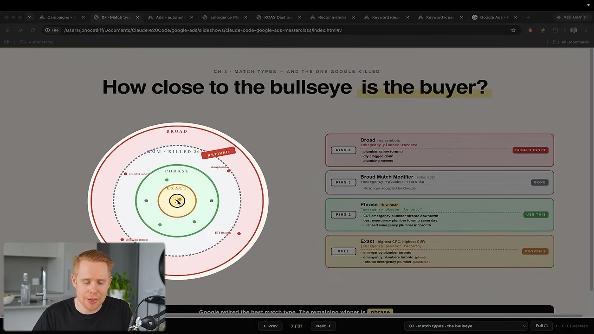
키워드 플래너로 진짜 검색량 보기
키워드는 무료인 Google 키워드 플래너로 찾아요. 광고 계정을 만들고 '도구 → 키워드 플래너 → 새 키워드 찾기'로 들어가 'plumbing'처럼 넓게 시작해요. 이때 지역을 꼭 내 도시로 좁혀야 해요. 기본값은 나라 전체예요. 영상에서는 토론토로 좁혀 키워드 699개가 나왔어요.
플래너는 월평균 검색량, 경쟁도, 상단 노출 입찰가를 보여 줘요. 검색량은 Claude도 모르는 정보라서 특히 중요해요. 화자는 경쟁이 있다는 걸 오히려 좋은 신호로 봐요. 경쟁이 있다는 건 돈이 된다는 뜻이니까요.
- 좋은 키워드: '근처 배관공'처럼 당장 사람을 부르려는 검색어, '응급'이 붙은 검색어, '서비스 + 내 도시', '24시간 서비스'.
- 피할 키워드: 경쟁사 상호(영상에선 Roto-Rooter), 하지 않는 서비스, 질 낮은 검색어.
경쟁사 이름을 피하는 이유도 설명해요. 그 회사를 직접 검색한 사람은 예전 고객이거나 소개받은 사람이에요. 광고를 눌러 통화까지 와도 "다른 회사에 연락하려던 거였어요"라며 끝나요. 고른 키워드는 내보내서 Claude Code에 넘겨요.
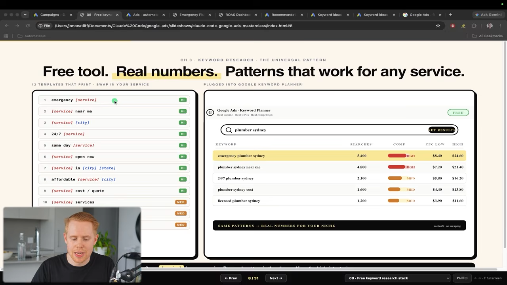
서비스 × 도시 표
화자가 잘 써 온 또 하나의 방법은 서비스와 도시를 표로 엮는 거예요. 응급 배관을 토론토, 미시소가, 브램턴, 노스요크, 스카버러, 마크햄마다 하나씩 만들고, 막힌 배수구도 도시마다 만들어요. 다만 작은 도시로 갈수록 검색량이 없어요. 토론토의 응급 배관은 검색량이 넉넉하지만 마크햄은 그렇지 않아서 뺄 수 있어요.
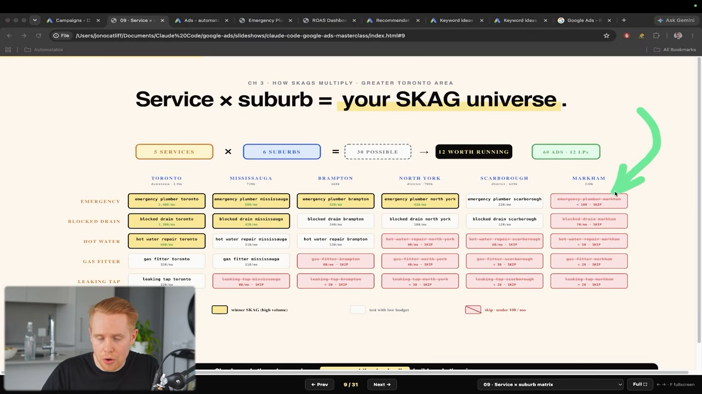
SKAG: 검색어, 광고, 페이지를 한 줄로
화자가 '70만 달러 전략'이라고 부르는 건 SKAG(Single Keyword Ad Group)예요. 원칙은 단순해요. 사람이 검색한 말, 광고 문구, 클릭해서 도착한 페이지가 모두 같은 말을 해야 해요.
'토론토 배관 서비스'를 검색했는데 '아연도금관 교체' 광고가 뜨면 상관없는 광고예요. '배관공 토론토' 광고를 눌렀는데 '수도관 교체' 페이지가 나와도 사람은 바로 나가요. 반대로 '믿을 수 있는 토론토 배관공'이라는 페이지가 나오면 문의할 가능성이 높아요. 찾던 것과 정확히 맞으니까요.
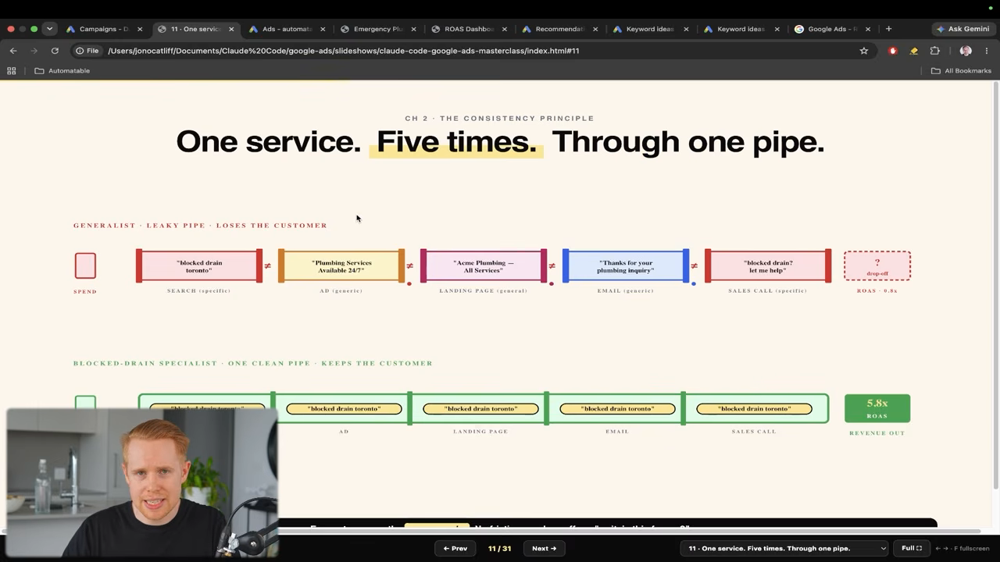
이 일관성은 광고에서 끝나지 않아요. 고객이 결제할 때까지 이메일과 영업 통화도 같은 이야기를 이어 가야 해요. 화자는 대부분이 범용 광고 → 범용 페이지 → 범용 이메일 → 범용 통화로 흘러가고, 그래서 Google Ads 성과가 나쁘다고 진단해요.
Claude Code를 Google Ads에 연결하기
여기부터는 Claude Code를 Google Ads 계정에 붙이는 준비 단계예요. 화자는 5분이면 끝나고 한 번만 하면 된다고 해요. 코딩을 몰라도 된다는 점을 강조하면서, Claude Code를 '내가 고용한 선임 개발자'에 비유해요. 내가 시키면 일을 해 오는 직원이라는 거예요.
작업 공간 만들기
- 무료 편집기 VS Code를 설치하고, 확장 프로그램 탭에서 Claude Code를 받아요.
- 'Google Ads'라는 빈 폴더를 열어요. Claude Code의 프로젝트는 항상 폴더 하나 안에서 움직여요.
- 화자가 나눠 주는 설정 가이드와 프롬프트 모음을 파일로 넣고, "설정 가이드를 읽고 내 Google Ads 계정을 연결해 줘"라고 보내요.
Claude는 비밀번호와 키를 담을 .env 파일을 만들고, 무엇을 채워야 하는지 단계별로 안내해요.
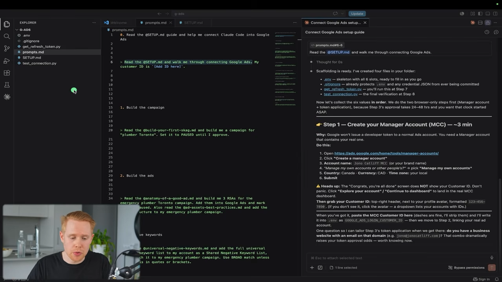
1단계: Google Ads 쪽 준비
일반 광고 계정 말고 관리자 계정(MCC)을 하나 더 만들어요. 관리자 계정에서 '계정 → 하위 계정 → 기존 계정 연결'로 원래 광고 계정 ID를 넣으면 확인 메일이 오고, 승인하면 연결돼요. 그다음 '관리 → API 센터'에서 개발자 토큰을 받아요. 화자는 이 토큰으로 하루 2,880회 요청까지 된다고 말해요. 더 필요하면 기본 액세스를 신청하고, 약 72시간 안에 승인된다고 해요.
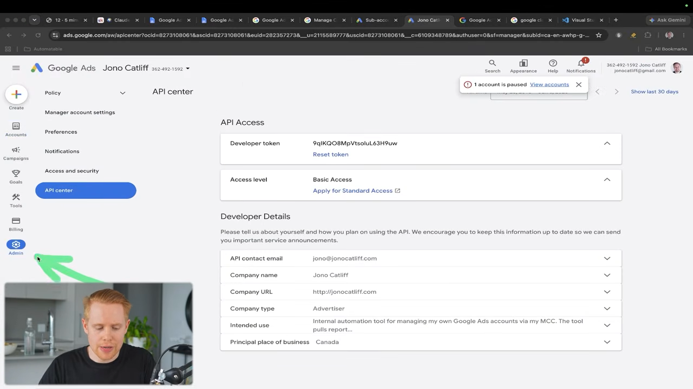
.env에 넣어요. 영상 14:39에서 보기2단계: Google Cloud 쪽 준비
이 부분은 Claude Code가 내 계정에 로그인할 수 있게 허락을 받는 과정이에요. 다른 프로그램이 Google 계정을 다루려면 API 사용 허가와 로그인 창구가 필요하거든요.
- Google Cloud Console에서 새 프로젝트를 만들고 결제 계정을 붙여요.
- 상단 검색창에서 'Google Ads API'를 찾아 사용 설정해요.
- 'API 및 서비스 → OAuth 동의 화면'에서 앱 이름과 지원 이메일을 넣고 '외부'로 만들어요.
- 같은 메뉴의 '대상'에서 로그인할 이메일을 테스트 사용자로 넣어요. 앞에서 쓴 이메일과 똑같아야 해요.
- '사용자 인증 정보'에서 '데스크톱 앱' 유형의 OAuth 클라이언트 ID를 만들고 JSON 파일을 내려받아요.
내려받은 파일을 credentials.json으로 이름을 바꿔 폴더에 넣고, Claude에게 인증을 부탁해요. Google 로그인 창이 뜨면 테스트 사용자로 넣은 계정으로 승인하면 끝이에요. 화자는 Claude가 뭔가 더 필요하다고 버티면 "필요한 건 이미 다 있다"고 알려 주라고 해요.
첫 캠페인 설정과 광고비 낮추기
캠페인, 광고 그룹, 광고
Google Ads는 3단 구조예요. 화자는 Google Drive의 폴더 안 폴더에 비유해요. 바깥 폴더마다 설정이 달려 있어요.
- 캠페인: 서비스 하나를 맡아요(예: 응급 배관). 하루 예산, 요일, 시간대, 지역을 여기서 정해요.
- 광고 그룹: SKAG이라 검색어가 하나뿐이에요(예: '응급 배관 미시소가'). 그 검색어 전용 광고와 전용 페이지로 이어져요.
- 광고: 한 그룹에 여러 개를 넣고 분할 테스트를 해요. 광고 하나만 내면 운이 좋을 수도, 그만두고 싶을 만큼 나쁠 수도 있어요. 수십, 수백 개를 돌려 크게 앞서는 하나를 찾고 그걸 오래 쓰는 게 목표예요.
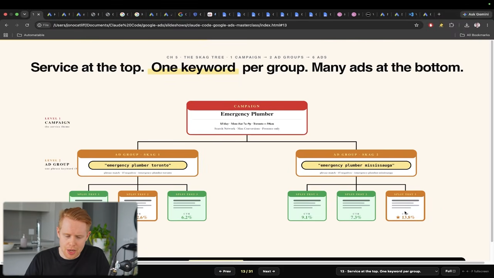
Claude가 만든 첫 캠페인
화자의 캠페인 가이드를 campaigns.md로 넣고, 내 도메인과 함께 "첫 캠페인을 만들어 줘"라고 보내요. 도메인을 주는 이유는 Claude가 회사 사이트를 조사해서 그 사업에 맞는 캠페인을 만들게 하려는 거예요. 가이드에 딸린 파이썬 스크립트는 몰라도 되니, 화자는 code 폴더로 치워 버려요.
잠시 뒤 계정에 'Plumber Toronto SKAG' 데모 캠페인이 생기고, 설정도 다 채워져 있어요. 화자가 하나씩 확인한 설정은 이래요.
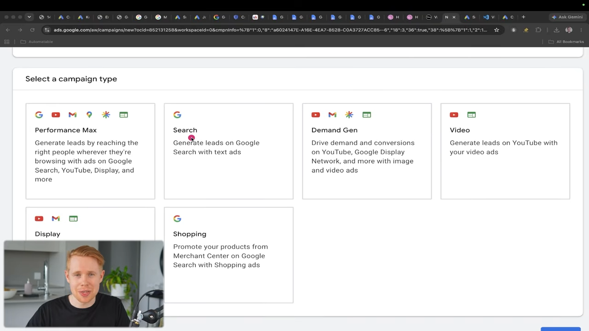
| 설정 | 화자의 선택 | 이유 |
|---|---|---|
| 캠페인 유형 | 검색만 | Performance Max, 디스플레이, 디맨드젠, 동영상은 화자 경험상 '쓰레기 트래픽'이에요. 쇼핑은 온라인 쇼핑몰이면 괜찮아요 |
| 입찰 | 전환수 최대화 | 뒤에서 설명해요 |
| 일정 | 24시간 또는 영업시간 | 심야 광고는 싸지만 새벽 2시 문의자는 다음 날 전화를 잘 안 받아요 |
| 지역 | 도심 반경 50km, '실제 위치'만 | '관심'을 두면 그 도시에 관심만 있는 해외 사람에게도 광고가 나가요. 손님이 찾아오는 업종이면 반경을 줄여요 |
| 제외 지역 | 내 나라 빼고 전부 | VPN·봇 클릭을 막아요 |
| 기기 | 전부 | |
| 잠재고객 세분화 | 쓰지 않음 | 검색어가 이미 의도를 보여 줘요. 더 좁히면 손해예요 |
| 자동 추천 적용 | 전부 끔 | 광고주 돈으로 Google이 버는 추천이라고 봐요 |
| 광고 순환 | 최적화(기본값) |
화자가 다른 유형을 싫어하는 이유는 경험이에요. 지메일이나 YouTube, 다른 웹사이트에 붙은 광고는 실수로 누르고 바로 닫는 경우가 대부분이고, 그런 광고로 뭔가를 산 적이 없다고 해요. 다만 다른 사람들은 성공했을 수도 있다고 선을 그어요.
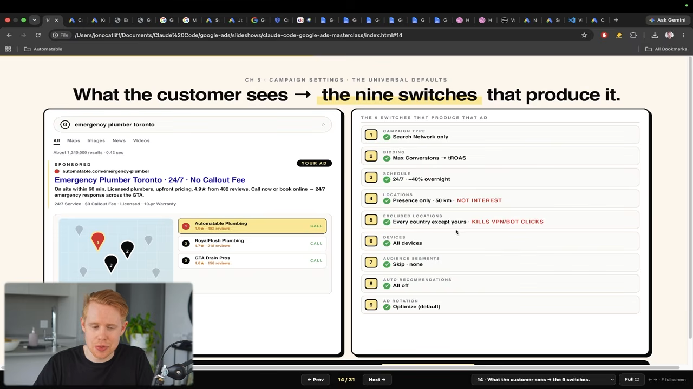
한번 흐름이 잡히면 앞에서 고른 키워드 목록을 Claude Code에 넣고 캠페인과 광고 그룹을 한꺼번에 만들 수 있어요. 손으로 하면 몇 주, 몇 달 걸리던 일이에요.
입찰 전략
Google Ads는 클릭당 비용을 내는 경매예요. 많이 부를수록 위에 뜨고, 위쪽일수록 비싸요. 처음에는 '전환수 최대화'로 시작해요. 클릭이 아니라 양식을 채운 문의를 기준으로 최적화하는 거예요. 데이터가 쌓이면 실제 결제 고객 기준(ROAS)으로 옮겨요. 클릭도, 문의도 그 자체로 돈이 되진 않으니까요.
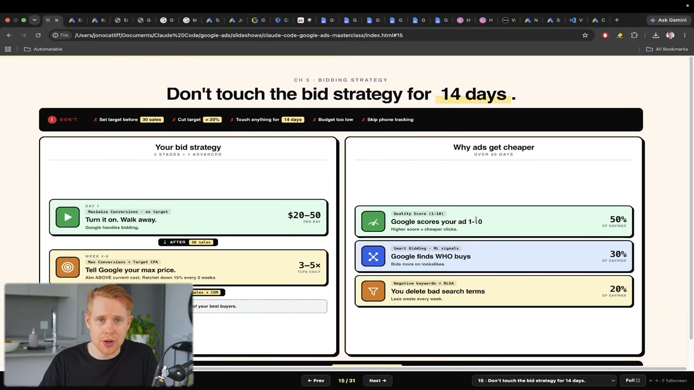
광고비를 낮추는 세 가지
- 스마트 입찰이 자리 잡을 시간을 주기. 새 계정은 Google이 내 고객을 파악하는 데 시간이 걸려요.
- 나쁜 검색어에 안 걸리기. 광고 하나로 검색어 50개를 받으면 49번은 엉뚱해요. SKAG이 이걸 막고, 그래도 나쁜 키워드가 보이면 캠페인에서 지워요.
- 품질평가점수 올리기. 점수가 높을수록 클릭이 싸져요. 예상 클릭률, 광고 관련성, 랜딩 페이지 관련성 세 가지로 매겨지는데, 화자는 SKAG 구조와 Claude가 만드는 광고·페이지가 세 가지를 다 챙긴다고 해요.
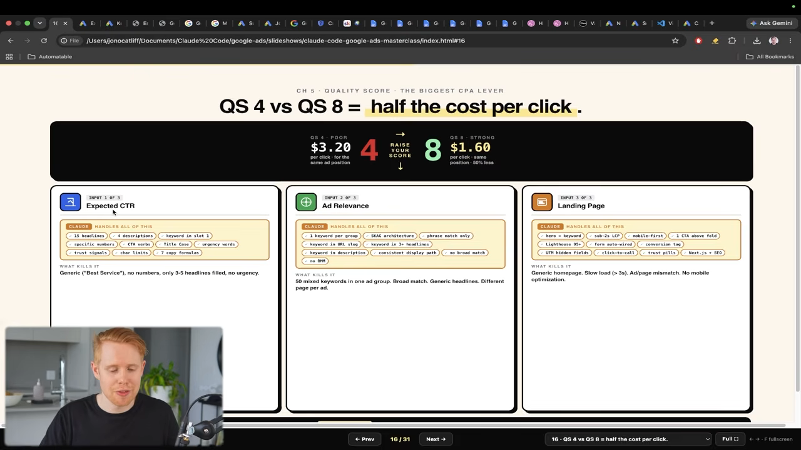
광고 200개, 헤드라인 고정, 제외 키워드
화자가 Claude Code에서 가장 좋아하는 작업이에요. 예전엔 좋은 광고 200개를 쓰려면 8시간, 길게는 16시간을 붙어 있어야 했는데 이제 몇 분이면 끝난다고 해요.
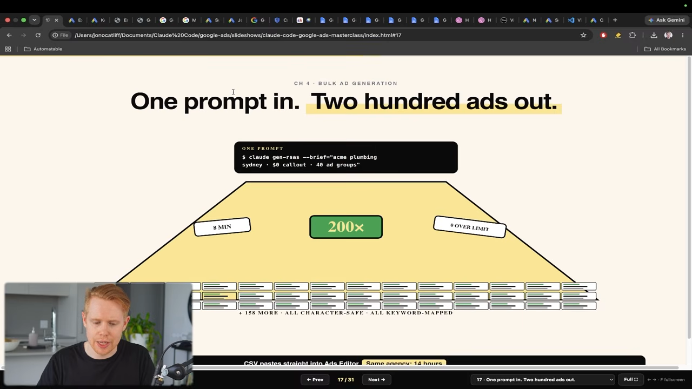
참고 파일 두 개와 프롬프트 하나
화자가 정리한 '좋은 Google 광고의 구조'와 '광고 확장 소재 모범 사례' 두 파일을 넣고 프롬프트를 보내요. 영상에선 짧게 광고 3개만 만들었지만 200개도 같은 방식이에요. Claude가 채운 항목은 이래요.
- 최종 URL과 표시 URL. 랜딩 페이지가 아직 없어서 일단 홈페이지를 임시로 넣어요.
- 헤드라인 15개와 설명문. 일부 헤드라인은 위치를 고정해요.
- 콜아웃. '24시간 응급 출동', '출장비 없음', '면허·보험 보유' 같은 짧은 장점 문구예요.
- 구조화 스니펫과 사이트링크. 제공 서비스 목록과 사이트의 다른 페이지로 가는 링크예요.
업체명과 로고는 Claude가 이번엔 건너뛰었는데, "다음엔 넣어 줘"라고 하면 챙겨요. 이미지도 넣을 수 있지만 화자는 조심하라고 해요. 질 좋은 이미지는 클릭을 늘리지만, 흔한 스톡 사진이나 어색한 AI 이미지는 신뢰를 깎아요.
헤드라인 1번 자리는 검색어로 고정
Google은 헤드라인 조합을 알아서 돌려 가며 클릭과 전환이 좋은 걸 찾아요. 그래도 1번 자리는 돌리면 안 된다는 게 화자의 핵심 조언이에요. 사용자가 검색한 키워드를 1번에 고정하고, 나머지 혜택 문구만 돌게 둬요.
이유는 사람이 광고를 건너뛰는 순간을 생각하면 알 수 있어요. 검색했는데 '선불 가격, 당일 서비스, 2분 견적' 같은 문구만 보이면 "이게 무슨 회사지?" 하고 넘겨요. 찾던 말이 맨 앞에 있어야 멈춰요.
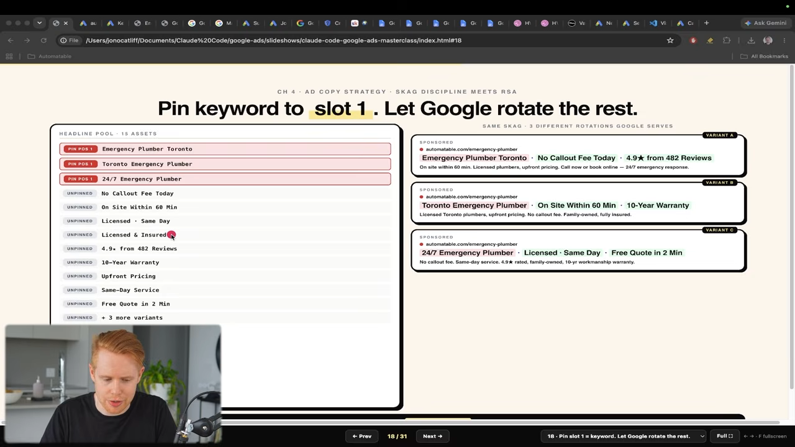
테스트는 3개가 아니라 수백 개도 좋다고 해요. 만들기가 이렇게 빠르니까요. 다만 결과를 믿으려면 검색량이 받쳐 줘야 해요. 한 달에 조회 100번인데 테스트를 200개 돌리면 승자를 가릴 수 없어요.
확장 소재로 화면 면적 넓히기
화자가 보는 확장 소재의 진짜 쓸모는 검색 결과 화면에서 자리를 많이 차지하는 거예요. 광고가 작으면 사람들이 그냥 다음 광고로 넘어가요. 크게 보일수록 더 눌려요. 광고 확인용 검색을 할 때는 광고 차단기를 꺼야 보인다는 팁도 줘요.
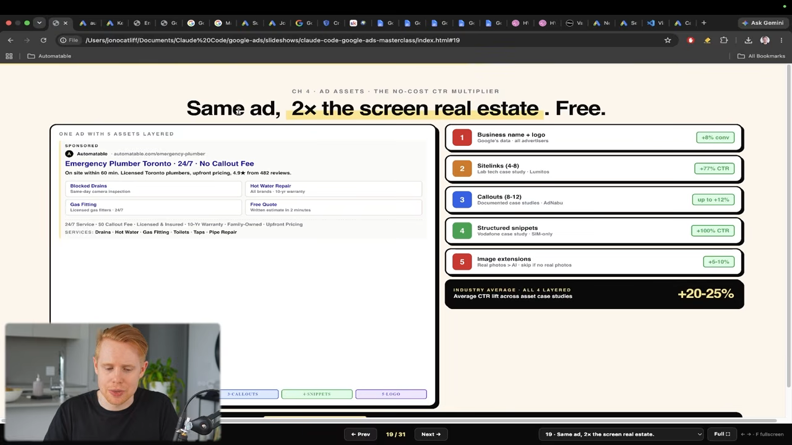
공통 제외 키워드 목록
광고를 보내기 전에 꼭 붙여야 하는 게 제외 키워드예요. 화자는 이 작업을 둘로 나눠요. 처음에 붙이는 '공통 목록'과, 운영하면서 실제 검색어를 보고 지우는 작업(뒤의 분석 단계)이에요.
공통 목록은 서비스 업종이면 어디나 돈이 안 되는 검색어예요. 배관 업체에 '배관공 학교'를 검색한 사람이 들어와도 매출은 없어요. 구직자, DIY, 학교·교육·자격증, 무료·정보 탐색, 기존 고객 지원 같은 묶음이에요. 화자의 목록 파일을 넣고 프롬프트를 보내면 Claude가 공유 제외 목록을 만들어 캠페인에 붙여요. 공유 목록이라 다른 캠페인에도 다시 쓸 수 있어요. 결과에는 '배관 쿠폰', '배관 강좌', '배관 정의', '배관 DIY' 같은 단어가 들어갔어요.
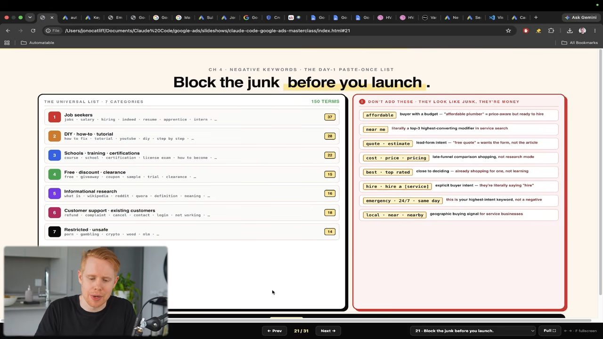
랜딩 페이지와 리마케팅
광고가 생겼으니 이제 광고마다 도착할 페이지를 만들어요. 화자는 예전에 이 작업에 한 달을 썼고 다시는 하기 싫었다고 해요. Claude로는 몇 분이면 된대요.
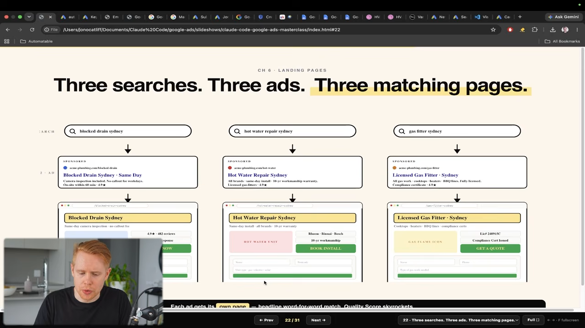
Claude로 페이지 만들기
프롬프트는 페이지를 Next.js로 만들고, 제목을 키워드와 맞추라고 지시해요. 화자는 Next.js를 '직접 코딩한 사이트용 워드프레스' 정도로 소개해요. 디자인은 디자인 공유 사이트 Dribbble에서 '배관 웹사이트'를 검색해 마음에 드는 이미지를 저장하고, 프롬프트에 붙이면 돼요. 결과물은 원본 디자인과 놀랄 만큼 비슷했다고 해요.
이 단계의 페이지는 내 컴퓨터(localhost)에서만 보여요. 광고의 최종 URL을 바꾸려면 먼저 배포해야 하고, 그건 영상 마지막에 다뤄요.
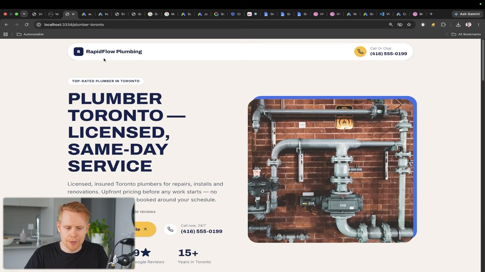
전환되는 페이지의 기본기
화자는 별도 강의가 있다며 기본만 짚어요. 예쁘진 않아도 20% 전환율을 낸 자기 페이지를 예로 들어요.
- 분할 테스트가 맨 위예요. 화자의 의견도, 술자리 친구의 의견도 틀릴 수 있어요. 데이터를 재야 확실해져요.
- 영상 후기. 사람들은 믿을 수 있는지 알고 싶어 해요. 과거 성과를 보여 주는 가장 좋은 방법이 사회적 증거예요.
- 문의 양식은 그 페이지에. 다른 페이지로 넘어가는 클릭 하나하나가 전환율을 깎아요.
- 창업자 영상. 서비스가 왜 필요한지가 아니라, 왜 동네 다른 업체가 아니라 나인지를 보여 줘요. 사람은 좋아하는 사람과 일하고 싶어 해요.
- 응답 속도. 문의가 오면 60초 안에 전화해요. 화자는 보통 업체가 48시간 걸린다며, 빨리 전화하는 것만으로 매출이 네 배가 될 수 있다고 말해요.
- 좋은 제안. 페이지에 매력적인 오퍼가 있어야 해요.
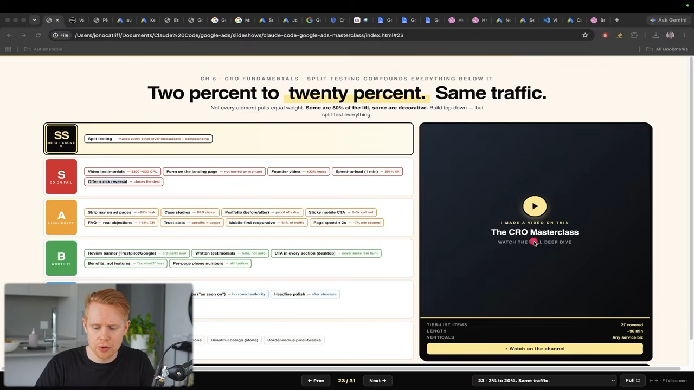
차가운 고객과 따뜻한 고객
처음 보는 사람은 나에게 관심이 없어서 잘 전환되지 않아요. 이미 사이트에 와 본 사람은 "아, 그 회사" 하고 기억해요. 노출이 쌓일수록 결제할 가능성이 높아져요. 지금까지 만든 건 모두 차가운 고객용이에요. 따뜻한 고객용으로는 리마케팅을 따로 둬요.
방법은 페이지에 Google 태그를 심는 거예요. 태그가 방문자를 표시해 두면, Google이 그 사람들을 목록으로 모아 다시 광고를 보여 줄 수 있어요. 화자의 가이드 파일(전환 추적과 잠재고객 설정)과 도메인을 넣으면 Claude가 태그와 전환 추적, 방문자 잠재고객까지 만들어요.
확인은 Google Tag Assistant로 해요. 로컬 페이지 주소를 넣고 연결한 뒤 양식을 한 번 제출해 봐요. 결과 화면이 복잡하니, 그 내용을 Claude에게 붙여 넣고 리마케팅 태그가 제대로 됐는지 물어보면 돼요. Claude 공식 Playwright 플러그인을 깔면 Claude가 브라우저를 직접 조작해 테스트할 수도 있어요.
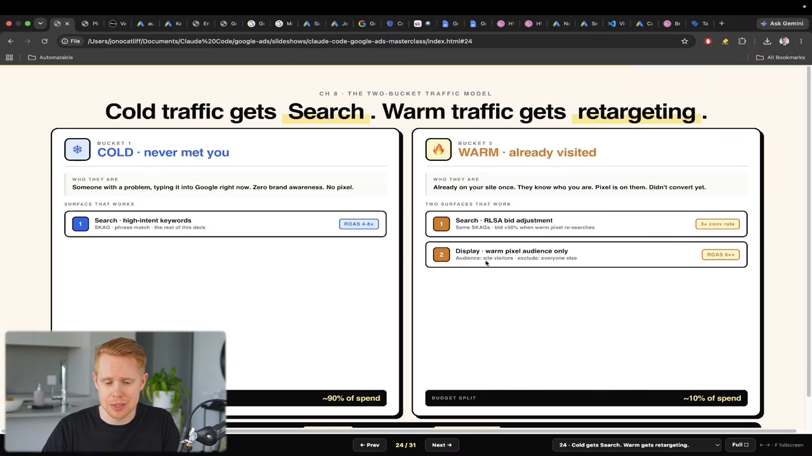
리마케팅은 두 가지예요. 화자는 이전 방문자에게 검색 광고를 다시 보여 주는 RLSA는 꼭 하라고 해요. 클릭은 더 비싸지만 전환율도 높아요. 배너를 띄우는 디스플레이 리마케팅은 될 때도 있고 안 될 때도 있다고 해요. 디스플레이는 리마케팅에서만 써 보고, 처음 보는 고객에겐 절대 쓰지 않아요. Performance Max, 디맨드젠, 동영상은 서비스 업종에선 실수 클릭, 안 열리는 앱 배너, 봇 트래픽에 돈을 내는 것이라며 쓰지 않는다고 해요.
분석: 대시보드, 진짜 ROAS, 새는 검색어
화자는 이 부분이 영상에서 가장 중요하다고 해요. 계정을 세팅해서 돈을 버는 게 아니라, 계속 고쳐서 벌어요. 어떤 캠페인을 끊을지, 어떤 검색어를 제외할지, 입찰을 어떻게 바꿀지 찾는 일은 길고 지루해서, 바쁜 사업주는 대행사에 월 5천 달러를 주고 맡겨요. 이 일을 Claude Code가 해요.
대시보드 만들기
프롬프트 하나로 첫 버전 대시보드를 만들었어요. 광고비, 목표 CPA, 캠페인별 지출·매출·ROAS, 그리고 Claude의 추천이 한 화면에 나와요. 추천은 멈출 캠페인, 예산을 늘릴 캠페인, 고칠 키워드, 지울 키워드 같은 것들이에요. 화자는 매주 월요일 아침 이걸 보고 "이 세 가지 고쳐 줘"라고 시키면 된다고 해요. 대시보드 없이 "계정을 감사해 줘"라고만 해도 돼요.
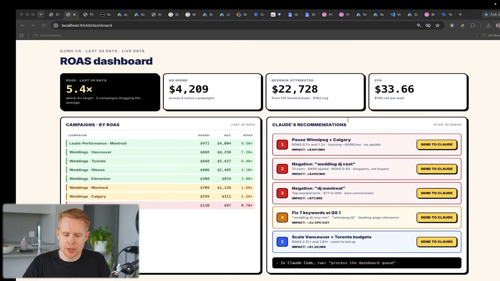
진짜 ROAS를 재는 다섯 단계
대시보드에 실제 매출을 연결하는 방법은 업체마다 시스템이 달라서 영상에서 직접 따라 하진 않아요. 대신 흐름을 보여 주고, 각 단계는 Claude와 대화하며 만들면 된다고 해요.
- URL 파라미터. 광고를 누르면 주소 뒤 물음표 다음에 정보가 붙어요. 키워드(wedding dj toronto), 캠페인, 광고 클릭 ID인 GCLID, 출처(google), 매체(cpc)가 실려 와요.
- 숨은 필드. 문의 양식에 보이지 않는 칸을 두고 이 값들을 받아요.
- 고객 관리 시스템(CRM) 저장. 양식이 제출되면 이름·이메일·전화와 함께 키워드·캠페인·클릭 ID가 기록돼요.
- 결제 연결. 고객이 청구서를 결제하면 자동화가 그 데이터를 꺼내 대시보드의 ROAS를 갱신해요.
- Google Ads에 다시 올리기. 대시보드는 내 보고용이라 Google은 몰라요. 그래서 결제 데이터를 CSV로 Google Ads에 올려요.
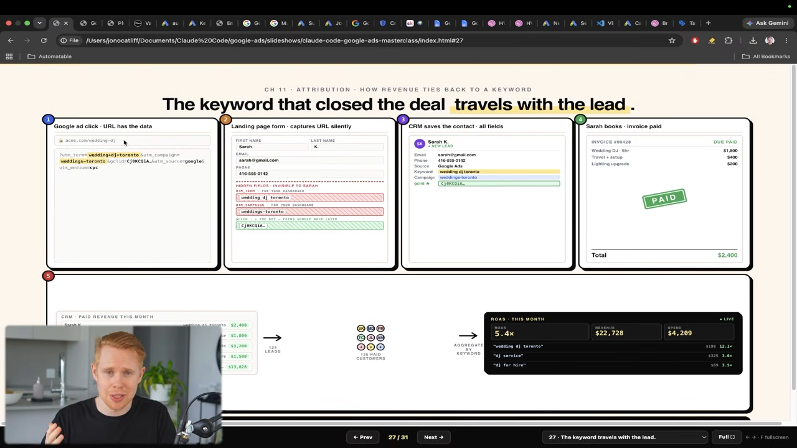
마지막 단계가 왜 필요한지도 설명해요. 데이터를 올리기 전까지 Google은 Sarah, Marcus, Priya, Tom이 각각 얼마를 냈는지 몰라요. 모든 문의를 같은 값(예: 200달러)으로 짐작할 수 있죠. 실제 결제액을 알려 줘야 Google이 그런 고객과 비슷한 사람을 찾아 입찰해요.
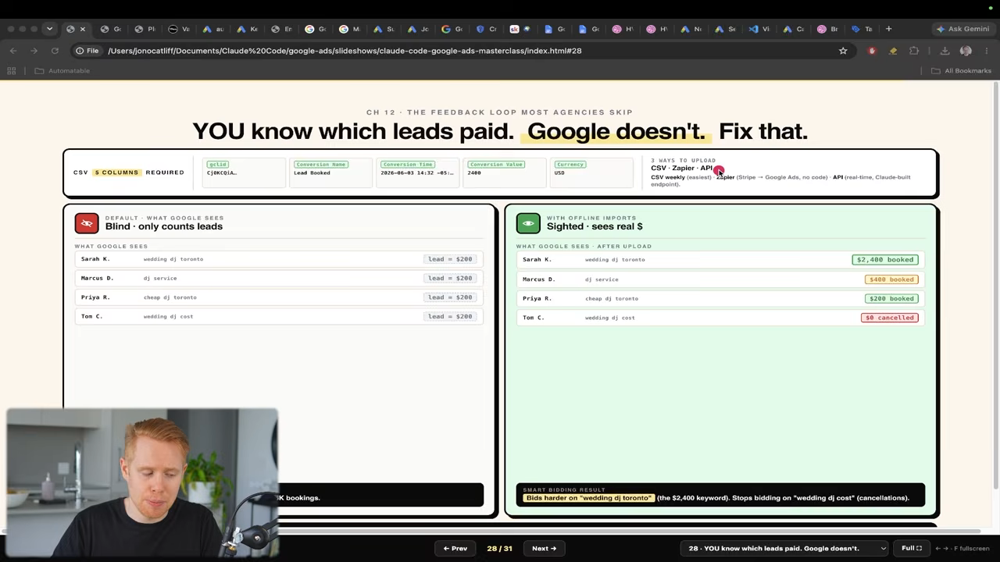
새는 검색어를 제외 키워드로
SKAG을 잘 써도 예상 못 한 검색어는 계속 들어와요. 검색어 보고서를 훑어 돈만 쓰는 검색어를 제외 목록에 넣어야 하는데, 이것도 Claude에게 맡겨요. 화자의 가이드 파일을 넣고 프롬프트를 보내면 Claude가 계정을 분석해 보고서를 주고, 승인하면 그대로 반영해요.
화자의 실제 DJ 업체 계정에서 나온 예가 인상적이에요. 'DJ hiring'은 DJ를 고용하려는 고객 검색어인 줄 알았는데, Claude가 검색해 보니 구인 게시판으로 가는 구직자 검색어였어요. 토론토 업체 광고가 '밴쿠버 웨딩 DJ'에 걸려 돈이 나가고 있던 것도 찾아냈어요. 화자는 몇 년을 운영하면서도 못 봤던 것들이라고 해요.
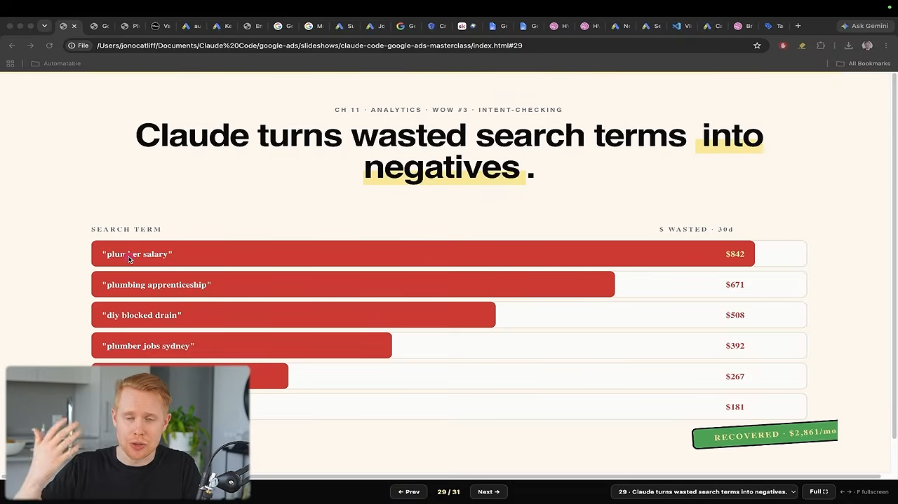
화자는 광고비를 줄이는 가장 좋은 방법 중 하나가 애초에 고객이 안 될 검색어에 돈을 안 쓰는 거라며, 이 작업을 가장 과소평가된 일로 꼽아요.
사이트 배포와 Claude Code 스킬
GitHub와 Vercel로 배포하기
지금 랜딩 페이지는 내 컴퓨터에만 있어요. 누구나 볼 수 있게 하려면 두 단계를 거쳐요. GitHub는 코드를 보관하는 곳이고, 화자는 '코드용 Google Drive'라고 설명해요. Vercel은 그 코드를 받아 인터넷에 띄워 줘요. 둘 다 무료로 쓸 수 있어요.
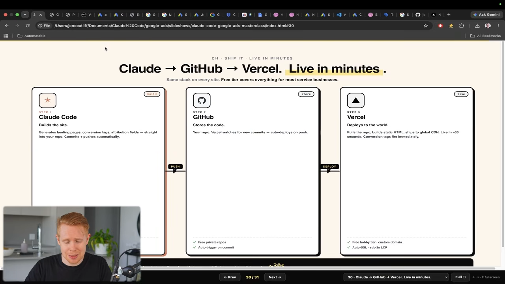
- GitHub에서 새 저장소를 비공개로 만들고 주소를 복사해요.
- Claude에게 주소를 주며 랜딩 페이지 폴더를 올려 달라고 해요. 마크다운 가이드 파일들은 빼고, 랜딩 페이지와 대시보드가 든 폴더만 올려요.
- Vercel에서 새 프로젝트를 만들어 GitHub를 연결하고, 그 저장소를 가져와요.
- 프레임워크 설정을 Next.js로 두고 배포해요.
배포가 끝나면 누구나 접속할 수 있어요. 기본 도메인이 보기 싫으면 Vercel에서 도메인을 사거나 GoDaddy, Namecheap 같은 곳에서 산 도메인을 붙여요. 그다음 광고의 임시 최종 URL을 각 광고에 맞는 랜딩 페이지 주소로 바꿔요.
작업 흐름을 스킬로 묶기
지금까지는 매번 파일을 넣고 프롬프트를 붙이느라 꽤 느렸어요. 이걸 10배 빠르게 하는 게 Claude Code의 스킬이에요. 화자는 스킬을 '필요할 때 부르는 작업 절차'라고 설명해요.
프롬프트 라이브러리에 있는 스킬 생성 프롬프트를 보내면 Claude가 프로젝트 폴더 안에 스킬을 만들어요. 새 대화에서 /generate-ads를 치고 "토론토 배관 광고 그룹에 광고 5개 더 만들어 줘"라고만 하면, 좋은 광고의 조건을 다시 설명하지 않아도 같은 품질로 만들어요.
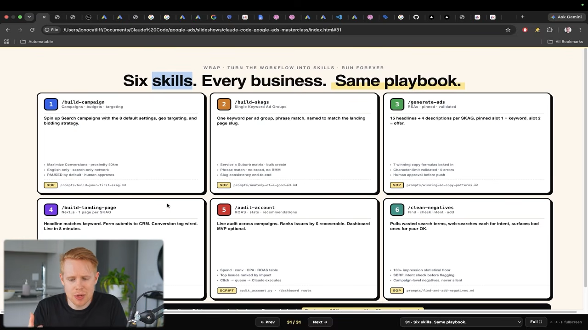